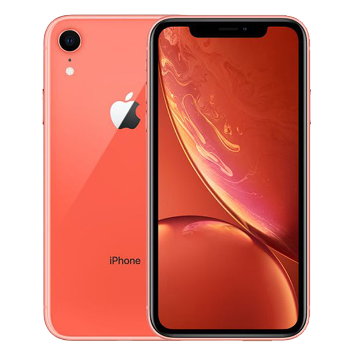

<
iPhone XR

Device Identifier: iPhone11,8
Release Date: October 2018
Appearance: Glass front and back, aluminum frame; Height: 150.9 mm (5.94 in); Width: 75.7 mm (2.98 in); Depth: 8.3 mm (0.33 in); Weight: 194 g (6.84 oz)
Color: Black, White, Blue, Yellow, Coral, (PRODUCT)RED
Display: Liquid Retina IPS LCD, 16M colors, 6.1 inches, 828 x 1792 pixels, 19.5:9 ratio, 326 PPI; True-tone display, Wide color gamut, Scratch-resistant glass, oleophobic coating
Sound: Stereo speakers, no 3.5mm jack
Rear Camera: Single 12 MP, f/1.8, 26mm (wide), 1/2.55", 1.4µm, dual pixel PDAF, OIS; Quad-LED dual-tone flash, HDR (photo/panorama), Portrait mode, Smart HDR, 4K@24/30/60fps, 1080p@30/60/120/240fps, gyro-EIS
Front Camera: Single 7 MP, f/2.2, 32mm (standard); HDR, portrait mode, depth control, 1080p@60fps
Biometric Security: Face ID
Processor: A12 Bionic
iOS: iOS 12, upgradable to iOS 15
RAM: 3GB
Internal Storage: 64GB, 128GB, 256GB
Connectivity: Wi-Fi 802.11 a/b/g/n/ac, dual-band, hotspot; Bluetooth 5.0, A2DP, LE
Battery: Non-removable Li-Ion 2942 mAh battery, Fast charging 15W, 50% in 30 min (advertised), Qi wireless charging
Back to Devices Specs